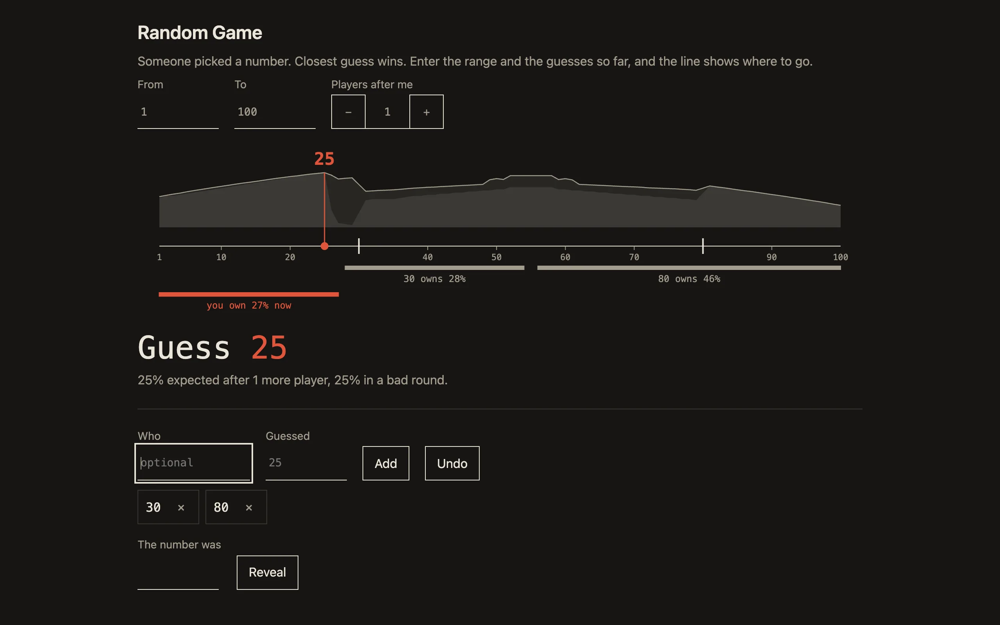

There's an icebreaker where someone picks a number in a range, say 1 to 100, everyone guesses, and the closest wins. Alone it's binary search. With other people guessing it's a land grab. Every guess owns the stretch of numbers it's closest to, and if the secret number is anywhere in the range with equal chance, your odds are the width of your stretch over the width of the range.
I built the first version for a recurring office game where the prize was picking the lunch restaurant. I kept losing because I was guessing "intuitively" and competing with everyone else's intuition for the same part of the number line. Most people guess round numbers. They cluster around multiples of 10 and especially around 50, and it's common to see three people in the 40 to 60 range while the ends of the range sit empty.
That version found the widest gap between neighbouring guesses and told you to bisect it. It won lunches, but with the range 1 to 100 and one guess at 30 it said 65, the midpoint of the gap above 30. Guess 65 and you own 48 to 100, about half the range. Guess 31 and you own 31 to 100, which is 70%. For a gap at the edge of the range, hug the neighbour. For a gap between two guesses you get half of it wherever you stand, so the midpoint is no better than anywhere else inside it. The midpoint only earns its place as a hedge against whoever guesses after you.
The rewrite takes that hedge seriously, and the first attempt got it wrong in a new way. Hug 31 and the next player hugs you back at 32 and walks off with 69% of the range, leaving you one number. So the tool asks how many players still guess after you. My first model had each of them take the best spot left, which sounds right and recommends sitting at 52 after someone says 50 with two players to come, on the theory that the open stretch from 1 to 49 is worth more to the next person than squeezing you. That's a one-point margin against a human who feels like saying 53.
Real players don't take the best spot left. Some bisect the biggest gap, which is what my old tool did and what an intuitive player does. Some guess wherever. A few hug a neighbour and take the most they can. So the engine now draws each later player from a mix of those three habits and plays the rest of the round out a few hundred times for every spot you could take, scoring the spot by the share you hold on average when the round ends, and keeping the tenth percentile as what a bad round looks like. After a lone 50 with two players to come it says 24, for about 32% on average and about 20% in a bad round. After 30 with one to come it says 72, for about 41%. With nobody after you it still says 31.
The mix starts at a guess, half bisectors, a third wherever, the rest huggers, and the app refits it from the rounds you log at your own table. You name each guesser, reveal the number at the end, and the ordered guesses tell it what board each person faced and what they did with it. Your own guesses are left out, since they came from the tool. A few rounds move it only a little. The scoreboard and the round log live in your browser, and the round is in the URL so you can send it to the table.
The secret number stays uniform. I spent a while on surveys of how people pick a "random" number between 1 and 100, and the spike at 37 and 73 that everyone quotes shows up in one survey and not the next. What does hold is that 7s and 3s are over-picked and round numbers under-picked. None of it has been measured for any other range, so the tool ignores it.
The bracket under the line also shows each guess's share of the range, and the band under the curve is the tenth percentile. Tap the line to prefill a number, add it when someone says it, and the picture redraws. It's a static page, so nothing leaves your phone.